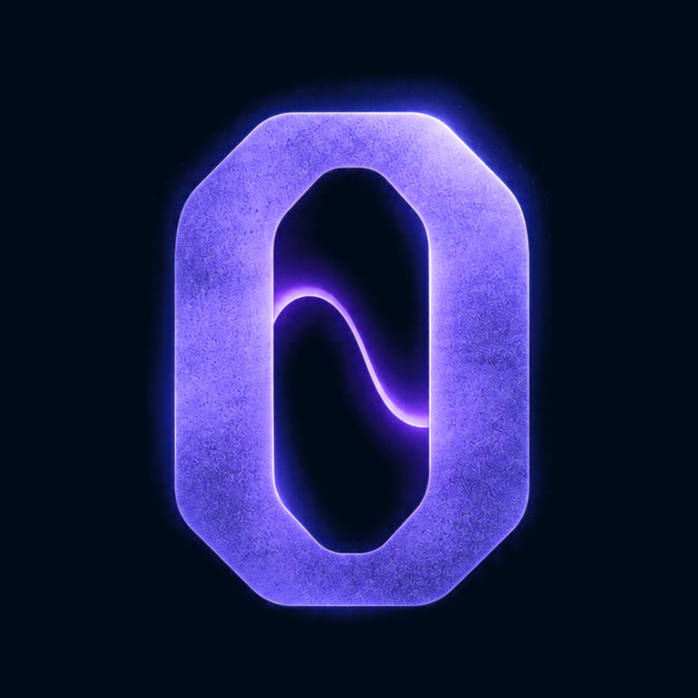
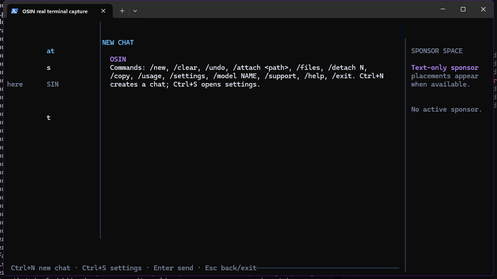

01⌨
A focused terminal workspace
A mouse-enabled, keyboard-friendly chat interface with multiple conversations, recent chats, and a model settings view.
›Ask a question or describe a coding task.

OSIN.AN AI CODING ASSISTANT, IN YOUR TERMINAL
OSIN gives you a focused place to think through coding problems with AI—without leaving your terminal. Bring a compatible API endpoint and model; keep the conversation close to your work.
Terminal-native · Endpoint-configurable · Open source

/help. The interface and command output are real; no model request was made.OSIN is a terminal chat for coding questions. It keeps the interaction simple: choose a model, bring relevant text into the conversation, and stay in your shell.
A mouse-enabled, keyboard-friendly chat interface with multiple conversations, recent chats, and a model settings view.
Configure a model name and OpenAI-compatible chat-completions endpoint through environment variables.
Attach UTF-8 text files with /attach, or paste larger text to turn it into an attachment. File and request sizes are bounded.
Use slash commands for new chats, settings, attachments, undo, copying a response, help, and usage.
/new/attach/usage+ moreWhen the endpoint returns usage data, OSIN totals requests and input/output tokens for the current chat. It is not a cost estimate.
OSIN sends chat requests to the configured endpoint. The code does not provide tools that edit project files or run shell commands.
OSIN is a chat interface, not an autonomous agent. You decide what to ask and what context to share.
Provide an API key and model. OSIN defaults to Groq’s OpenAI-compatible endpoint, or you can configure another compatible URL.
Launch OSIN in an interactive terminal and describe the coding question you want to work through.
Attach UTF-8 text files or ask follow-up questions. OSIN sends the chat to your configured endpoint and displays its response.
Install OSIN globally, create your private per-user config, add an OpenAI-compatible provider key and endpoint, then launch the workspace. No project files are changed by setup.
npm install -g @kabirprokk/osin-cliosin initOSIN_API_KEY · OSIN_BASE_URL · OSIN_MODEL/models · osin# Install globally from npm
npm install -g @kabirprokk/osin-cli# Create your per-user config
osin init# Set OSIN_API_KEY, OSIN_BASE_URL and OSIN_MODEL
# In the app: /models lists models exposed by your provider
osinRequires Node.js 18+. OSIN currently supports OpenAI-compatible Chat Completions APIs. See the README for provider configuration.
Prepared for osin.is-an.org · This page has not been deployed or DNS-verified.
Explore the source and see if OSIN fits your workflow.